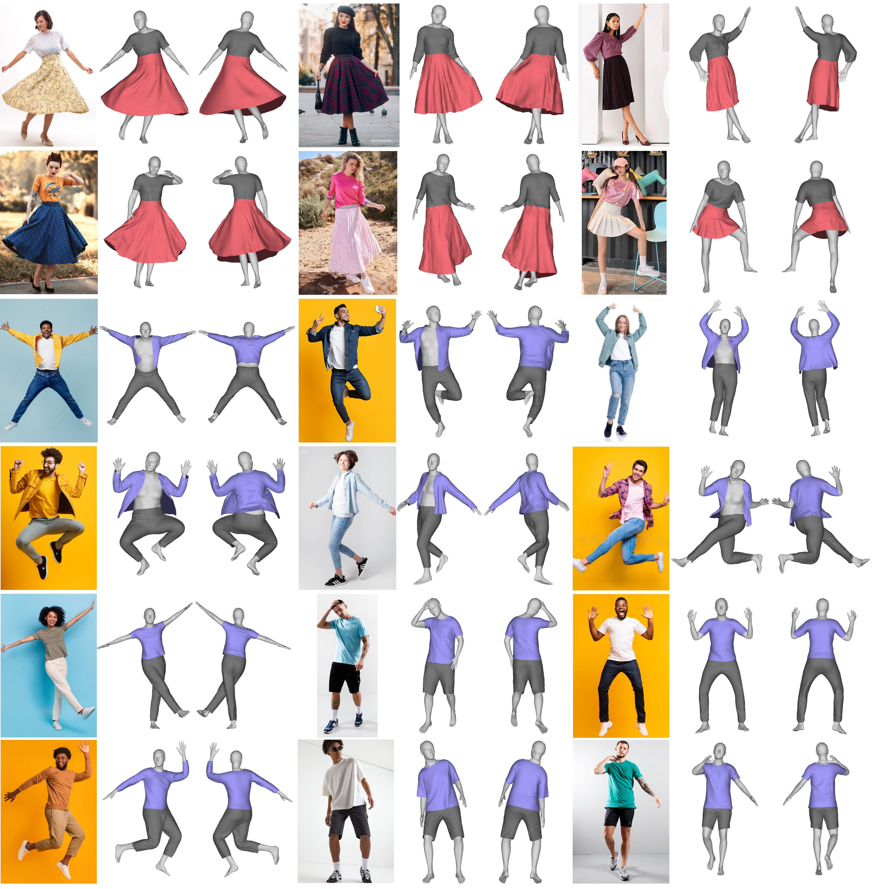
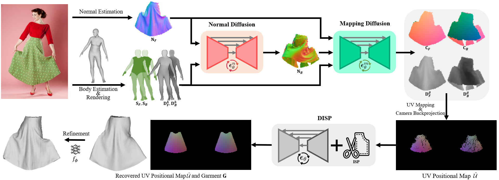

Single View Garment Reconstruction Using Diffusion Mapping Via Pattern Coordinates
Ren Li1, Cong Cao2, Corentin Dumery1, Yingxuan You1, Hao Li2,3, Pascal Fua1
1 CvLab, EPFL 2 MBZUAI 3 Pinscreen
Abstract
Reconstructing 3D clothed humans from images is fundamental to applications like virtual try-on, avatar creation, and mixed reality. While recent advances have enhanced human body recovery, accurate reconstruction of garment geometry -- especially for loose-fitting clothing -- remains an open challenge. We present a novel method for high-fidelity 3D garment reconstruction from single images that bridges 2D and 3D representations. Our approach combines Implicit Sewing Patterns (ISP) with a generative diffusion model to learn rich garment shape priors in a 2D UV space. A key innovation is our mapping model that establishes correspondences between 2D image pixels, UV pattern coordinates, and 3D geometry, enabling joint optimization of both 3D garment meshes and the corresponding 2D patterns by aligning learned priors with image observations. Despite training exclusively on synthetically simulated cloth data, our method generalizes effectively to real-world images, outperforming existing approaches on both tight- and loose-fitting garments. The reconstructed garments maintain physical plausibility while capturing fine geometric details, enabling downstream applications including garment retargeting and texture manipulation.Garment Reconstruction

Our method can recover realistic 3D models for diverse garments in different shapes and deformations.
Approach

Given an image of a clothed person, we first estimate the front normal $\textbf{N}_F$ of the target garment, and the SMPL body model which is used to render the body part segmentation ($\textbf{S}_F$, $\textbf{S}_B$) and depth ($\textbf{D}_F^b$, $\textbf{D}_B^b$) images. The back normal $\textbf{N}_B$ of the garment is estimated subsequently by the diffusion model $\boldsymbol{\epsilon}_{\theta}^n$. We then predict the UV-coordinate ($\textbf{C}_F$, $\textbf{C}_B$) and the depth ($\textbf{D}_F^g$, $\textbf{D}_B^g$) images from the garment normal and body estimations with the mapping model $\boldsymbol{\epsilon}_{\theta}^m$. The incomplete UV positional map $\tilde{\mathcal{U}}$ is produced from them using the camera backprojection. Finally, we fit $\tilde{\mathcal{U}}$ to DISP to recover the complete UV positional map $\hat{\mathcal{U}}$ and the corresponding garment mesh $\textbf{G}$, which is further improved by the refinement.
BibTeX
If you find our work useful, please cite it as:@inproceedings{li2025,
author = {Li, Ren and Cao, Cong and Dumery, Corentin and Yingxuan, You and Li, Hao and Fua, Pascal},
title = {{Single View Garment Reconstruction Using Diffusion Mapping Via Pattern Coordinates}},
booktitle = {ACM SIGGRAPH 2025 Conference Papers},
year = {2025}
}
References
[ISP]
R. Li, B. Guillard, P. Fua. ISP: Multi-Layered Garment Draping with Implicit Sewing Patterns. In NeurIPS, 2023.